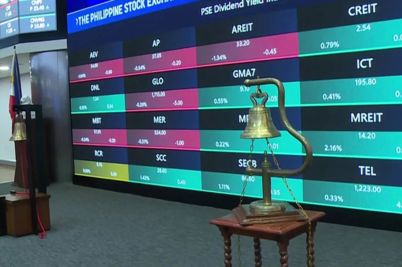

Dataset Overview
The dataset consists of the daily closing prices of all six official Philippine Stock Exchange (PSE) sector indices, covering January 2, 2019 to April 2025. This date range captures the full COVID-19 crash cycle, including the pre-pandemic baseline, the March 2020 market collapse, and the multi-year recovery period extending to the present.
Each sector index is a market-capitalization-weighted composite of all PSE-listed companies classified under that sector. The six indices collectively represent the entire Philippine equity market and are the official measures published by the Philippine Stock Exchange.
The six sector indices are the official classification system used by the Philippine Stock Exchange. Together, they cover every company listed on the PSE, making them the most comprehensive available lens for studying how different segments of the Philippine economy respond to macroeconomic shocks and are directly relevant to SDG 8's goal of sustained, inclusive economic growth.

Photo: ABS-CBN News · PSE trading floor, January 2025
| Ticker | Sector | Description | ~Rows |
|---|---|---|---|
| PSFI | Banks & Financial Services | Banks, insurance companies, and other financial institutions listed on the PSE | |
| PSHO | Holding Firms | Diversified conglomerates with subsidiaries across multiple industries | |
| PSIN | Industrial | Manufacturing, energy, utilities, and other industrial companies | |
| PSPR | Property | Real estate developers, REITs, and property management companies | |
| PSSE | Services | Retail, telecommunications, media, and consumer service companies | |
| PSMO | Mining & Oil | Mining companies and oil exploration firms listed on the PSE |
Data was collected from Investing.com[1], which provides free historical daily closing price data for all six PSE sector indices via dedicated historical data pages. Each sector index was downloaded as a separate CSV file covering the full date range (January 2019 – April 2025).
The six CSV files were then combined into a single long-format dataset with the following columns: Date, Sector, Close, Open, High, Low, and Change %. Rows correspond to individual trading day observations per sector. Non-trading days (weekends and Philippine public holidays) are excluded, consistent with how the PSE publishes index data.
Primary source: Investing.com, Philippines Stock
Indices (free CSV download, free registration required).
Secondary source: PSE Index History
(pse.com.ph/index-history/), used for cross-validation of key dates
and index values.
| Format | CSV → Long format |
| Date range | Jan 2, 2019 – Apr 2025 |
| Frequency | Daily (trading days only) |
| Sectors | 6 indices |
| Total rows |
Raw CSVs downloaded from Investing.com use a comma-separated format with date strings in MM/DD/YYYY format. Preprocessing steps applied:
-
1
Standardized date format to YYYY-MM-DD across all six files
-
2
Added a
Sectorcolumn to each file before merging -
3
Removed commas from numeric values (e.g., "1,234.56" → 1234.56)
-
4
Verified no duplicate dates within each sector; no missing trading days found
-
5
Computed a normalized index (January 2019 = 100) for each sector by dividing each daily closing price by the sector's first observed value on January 2, 2019 and multiplying by 100, enabling direct cross-sector comparison of crash depth and recovery trajectory regardless of absolute index scale
| Ticker | Sector | Start (Jan 2019) | End (Apr 2025) | Min | Max | Total Return |
|---|
Five representative rows per sector from the combined long-format dataset.
| Date | Ticker | Sector | Closing Price |
|---|
The full combined dataset (all six sector indices, daily, 2019–2025) is available on Google Sheets below. Each sector is on a separate sheet tab, with a combined long-format sheet included for analysis.